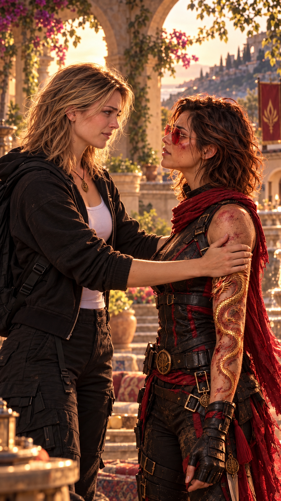
Hacienda Awake.
Le véhicule franchit enfin les grilles de l’hacienda.
Anna est la première à sortir.
Elle aperçoit Hope.
Pendant une seconde, elle reste immobile.
Comme si elle avait besoin de vérifier qu’elle ne rêvait pas.
Puis elle court.
— Hope !
Hope n’a pas le temps de réagir.
Anna se jette dans ses bras.
Hope grimace sous la douleur, mais referme immédiatement les siens autour d’elle.
— Doucement…
Anna recule.
— Tu es blessée ?
— Un peu.
— « Un peu » comment ?
Peter intervient :
— Dans son langage, ça signifie généralement suffisamment pour qu’un être humain normalement constitué soit à l’hôpital.
Hope le regarde.
— Merci.
Anna ne sourit même pas.
— J’ai cru que tu étais morte.
Hope pose simplement une main sur sa joue.
— Moi aussi, pendant quelques secondes.
Anna la regarde, horrifiée.
Hope sourit.
— Mais visiblement, j’ai encore quelques petites choses à faire.
Betty observe la scène quelques mètres plus loin.
Et Hope le remarque.
Le regard de la généticienne.
L’inquiétude.
Le soulagement.
Mais aussi autre chose.
La peur.
Pas celle de perdre Hope.
Une autre.
Hope pense immédiatement aux fresques.
À la fiole.
À Anna.
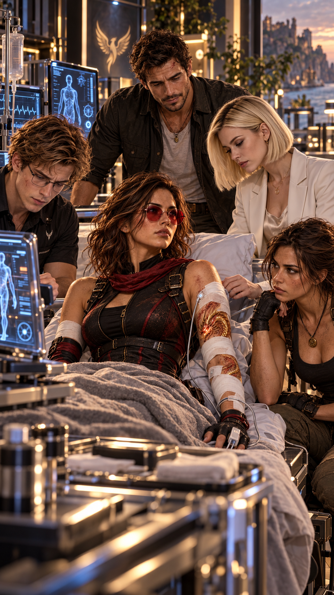
Peter installe Hope dans une pièce médicale de l’hacienda.
— Assieds-toi.
— Je vais très bien.
— Assieds-toi.
Root entre derrière eux.
— Il faut vraiment encadrer ce moment.
Hope la regarde.
— Lequel ?
— Celui où tu obéis à quelqu’un.
Peter prépare plusieurs capteurs.
— Je vais aussi l’enregistrer.
— Vous êtes insupportables.
Max entre à son tour.
— Tout est revenu à la normale, donc.
Hope sourit.
Puis son regard se pose de nouveau sur Betty.
— Pas tout à fait.
Betty comprend immédiatement.
Hope retire les capteurs que Peter vient à peine de lui poser.
— Hé !
— Plus tard.
Hope se tourne vers Betty.
— On doit parler.
Anna regarde alternativement les deux femmes.
— De quoi ?
Betty répond immédiatement :
— D’une vieille histoire.
Hope ne la quitte pas des yeux.
— Très vieille.
Anna fronce les sourcils.
— Pourquoi j’ai l’impression que cette « vieille histoire » me concerne ?
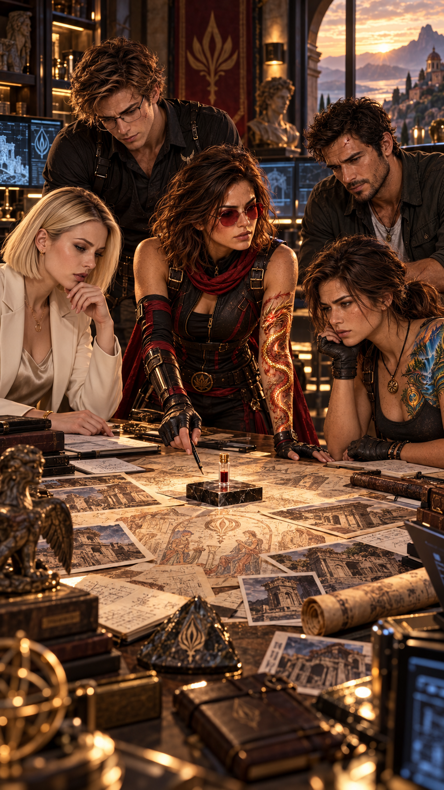
Quelques minutes plus tard, ils se retrouvent dans le bureau privé d’Hope.
Betty.
Hope.
Root.
Peter.
Max.
Anna.
La porte se referme.
Anna s’assoit.
— Je sens que je vais détester cette conversation.
Max répond doucement :
— Probablement.
Betty lui lance un regard.
— Merci beaucoup, Max.
Hope reste quelques secondes silencieuse.
Puis :
— Une salle.
— Sous la montagne.
— Derrière un passage qui ne pouvait s’ouvrir qu’avec mes marques.
Root intervient :
— Dragon et Phénix ?
— Oui.
Hope poursuit :
— Il y avait des fresques.
— Très anciennes.
— Peut-être plus anciennes que tout ce que nous connaissons.
Root se redresse.
— Des Anciens ?
Hope la regarde.
— Probablement.
Puis elle se tourne vers Betty.
— Et il y avait une fiole.
Hacienda Flores.
Au même moment, Lucy observe un mur entier d’écrans.
Hale se tient derrière elle.
Clive, lui, est assis sur le bureau.
Lucy se retourne.
— Descends.
— Pourquoi ?
— Parce que c’est un bureau.
— Très bonne analyse.
Hale ne quitte pas les relevés d’accès.
— Ils connaissaient les angles morts.
Lucy acquiesce.
— Oui.
— Les rotations des équipes.
— Oui.
— L’emplacement des chambres.
— Oui.
— Les procédures de confinement.
Lucy ajoute :
— Et les temps de réponse.
Hale serre les mâchoires.
— Quelqu’un leur a donné tout ça.
Clive intervient :
— Peut-être.
Lucy croise les bras.
— Tu as mieux ?
Clive sourit.
— Évidemment.
— Vous cherchez quelqu’un capable de pirater votre sécurité.
— Moi, je chercherais quelqu’un capable de modifier votre organisation.
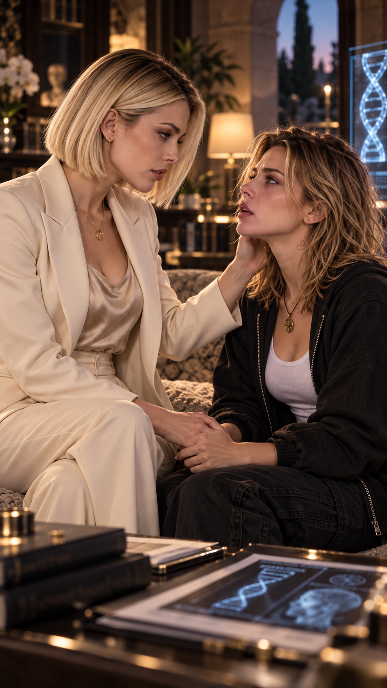
Hacienda Awake.
Betty s’est levée.
Elle marche lentement dans la pièce.
Anna la suit du regard.
Betty s’arrête.
— Tu te souviens de ce que je t’ai toujours dit ?
— Que tu étais le plus beau projet de ma vie.
Anna sourit faiblement.
— Oui.
Betty ferme les yeux.
— Ce n’était pas une métaphore.
Le sourire disparaît.
Betty regarde sa fille.
— Je t’ai créée.
Anna rit nerveusement.
— Oui, enfin… comme toutes les mères.
Betty ne sourit pas.
— Je ne t’ai jamais portée.
Anna ne bouge plus.
— Quoi ?
— Tu n’as jamais grandi dans mon ventre.
Le silence semble interminable.
Anna regarde autour d’elle.
Personne ne rit.
— Ce n’est pas drôle.
— Je sais.
— Arrête.
— Anna…
— Arrête.
Sa voix tremble.
— Tu m’as raconté ma naissance.
— Oui.
— Tu m’as raconté que tu avais eu peur.
— Oui.
— Que j’étais arrivée plus tôt que prévu.
Betty baisse les yeux.
— Tu m’as menti.
Toute ma vie.
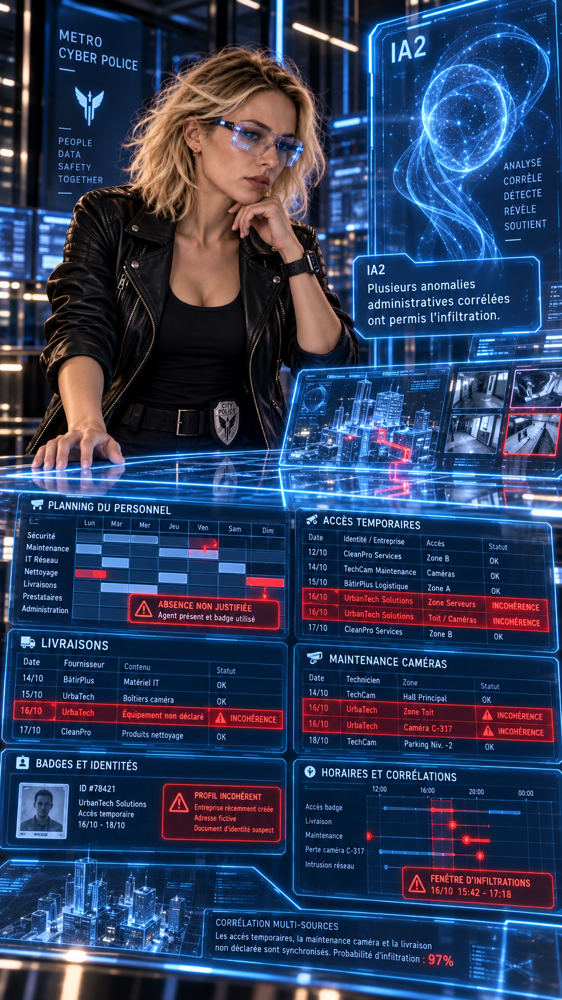
Hacienda Flores.
IA2 affiche une première anomalie.
Lucy agrandit les résultats.
Maintenance caméra.
Remplacement de garde.
Livraison déplacée.
Modification d’horaire.
Toujours autour de moments importants concernant Anna.
Lucy commence à voir le schéma.
— IA2.
— Compare toutes ces modifications avec les déplacements d’Anna.
Les résultats apparaissent.
Clive cesse de sourire.
— Ah.
Chaque fois qu’Anna changeait exceptionnellement d’horaire…
une modification administrative avait lieu dans les vingt-quatre heures.
Quelqu’un suivait ses habitudes.
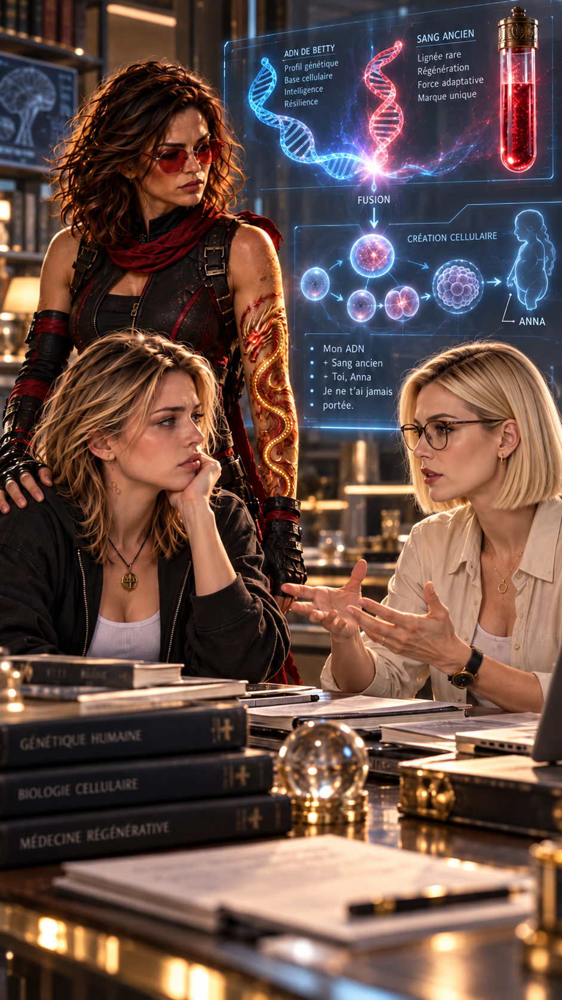
Hacienda Awake.
Betty reprend lentement.
— Lorsque Root m’a donné la fiole, j’ai d’abord pensé qu’elle contenait un simple échantillon biologique ancien.
— J’ai commencé par le dater.
— Puis je l’ai analysé.
Peter écoute attentivement.
— Humain ? demande Max.
Betty hésite.
— En partie.
Hope se redresse.
— En partie ?
— Certains marqueurs étaient compatibles avec notre espèce.
— D’autres…
semblaient impossibles.
Anna la regarde.
— Et tu as décidé de faire quoi ?
Betty reste silencieuse.
Puis :
— De comprendre.
Hope murmure :
— Jusqu’où ?
Betty regarde Anna.
— Trop loin.
— J’ai utilisé mon propre matériel génétique comme base.
Peter ferme les yeux.
Il comprend avant Anna.
Betty ajoute :
— Et j’y ai intégré une quantité extrêmement faible de matériel provenant de la fiole.
Anna recule.
— Tu m’as fabriquée.
— Anna…
— Tu m’as fabriquée !
Betty secoue la tête.
— Non.
Sa voix se brise.
— Parce que ce qui est arrivé ensuite… ce n’était plus une expérience.
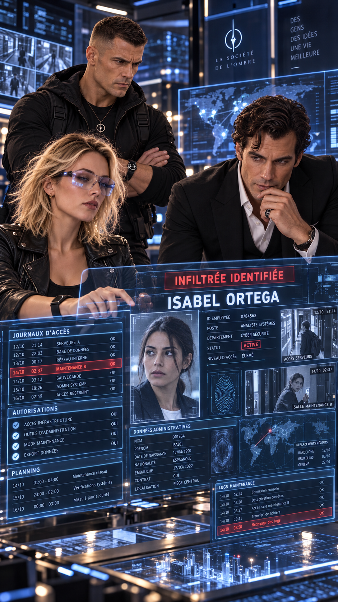
Hacienda Flores.
IA2 fouille les archives.
Puis un nom revient.
Une première fois.
Puis une deuxième.
Puis une troisième.
Toujours dans la chaîne de validation.
ISABEL ORTEGA.
Hale se fige.
Lucy le remarque.
— Tu la connais.
Ce n’est pas une question.
— Depuis des années.
— Quel poste ?
— Coordination interne.
Clive regarde Lucy.
— Celle qui peut déplacer une maintenance sans que personne trouve ça bizarre.
Lucy et Clive travaillent désormais depuis près d’une heure sur Isabel.
Rien de directement incriminant.
Jusqu’à ce qu’IA2 récupère un fichier supprimé.
Lucy extrait la couche invisible.
Des suites de chiffres apparaissent.
Dates.
Heures.
Déplacements.
Initiales.
A.F.
École.
Consultation médicale.
Entraînement natation.
Puis une date.
Douze ans plus tôt.
SUJET A.F. — ÂGE : 7 ANS.
Capacité d’apprentissage supérieure aux autres enfants du même groupe.
Mémoire inhabituelle.
Réaction rapide face à une situation imprévue.
Continuer l’observation.
Puis :
Rapport transmis. Réception confirmée.
Destinataire :
INCONNU.
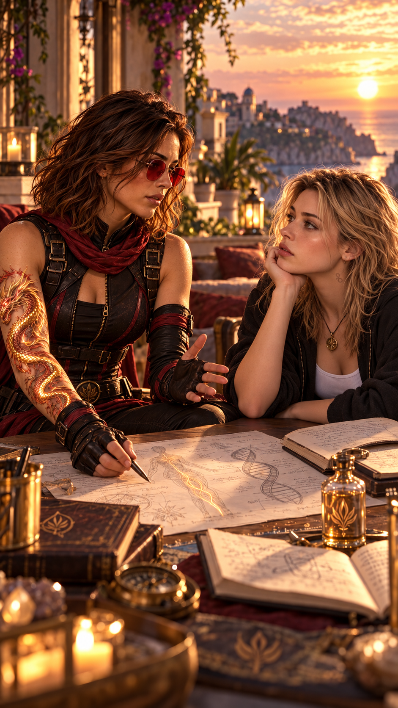
Hacienda Awake.
Hope s’approche doucement d’Anna.
— Je peux te dire quelque chose ?
— Ce que ta mère vient de t’apprendre change ton histoire.
Anna garde les yeux baissés.
— Ça change tout.
— Non.
Anna relève les yeux.
— Ça change ton origine.
— Pas tout ce que tu es devenue depuis.
Ton humour.
Tes choix.
Tes colères.
Ce que tu aimes.
Ce que tu refuses.
Tout ça n’était pas dans une fiole.
Anna regarde Hope.
— Et ce que tu as découvert dans la grotte ?
Hope hésite.
— Ça…
pourrait changer encore davantage ce que nous croyons savoir.
— Mais je refuse de te dire que tu es quelque chose tant que nous n’avons pas de preuves.
Root demande :
— Qu’est-ce que les fresques disaient exactement ?
Hope réfléchit.
— Qu’un jour, le sang des Anciens pourrait rencontrer le nôtre.
— Et que de cette rencontre…
l’Équilibre pourrait renaître parmi nous.
Anna murmure :
— L’Équilibre.
Hope acquiesce.
— Peut-être. Mais « peut-être » est important.
Le téléphone d’Hope vibre.
Lucy.
Hope décroche.
Le visage de Lucy apparaît.
Pas de plaisanterie.
Pas de sourire.
Hope comprend immédiatement.
— On a trouvé la taupe.
Hope se redresse.
— Qui ?
— Isabel Ortega.
Betty devient blanche.
— Isabel ?
— Elle travaille pour moi depuis plus de dix ans.
Lucy poursuit :
— Elle ne surveille pas Anna depuis l’attaque.
— Ni depuis l’arrivée d’Hope.
— Ni même depuis quelques années.
Hale apparaît derrière Lucy.
— On a retrouvé des rapports.
Betty murmure :
— Depuis quand ?
— Anna avait sept ans.
Personne ne parle.
Puis Lucy ajoute :
— Et ça, c’est seulement le plus ancien rapport qu’on a retrouvé pour l’instant.
Hope se fige.
Root la regarde.
Une même pensée vient de les traverser.
Si quelqu’un surveillait déjà Anna à sept ans…
alors quelqu’un savait.
Bien avant eux.
Bien avant Hope.
Peut-être même…
bien avant qu’Anna elle-même ne puisse comprendre ce qu’elle était.
Hope murmure :
— Betty…
— Qui d’autre savait ce que tu avais fait ?
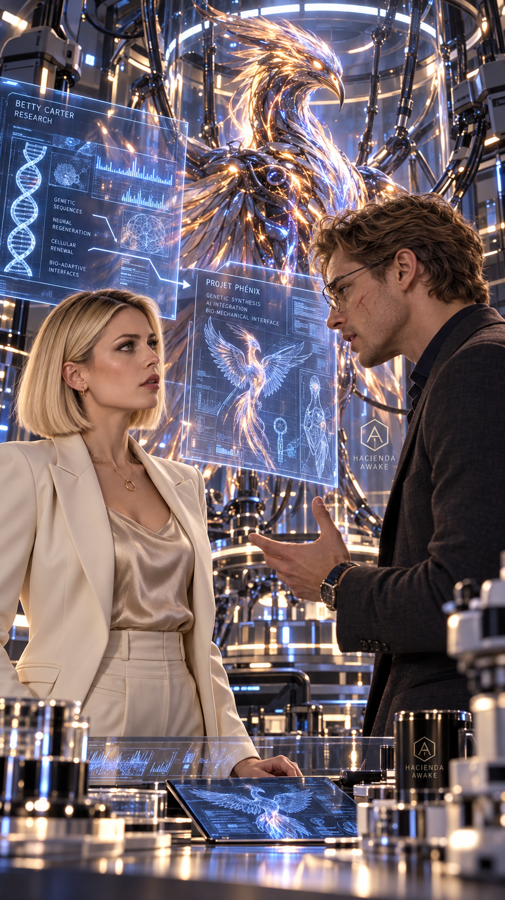
Plus tard, Betty se tient seule sur la terrasse de l’Hacienda Awake.
Peter finit par la rejoindre.
Peter devient plus sérieux.
— Tu sais que j’ai des sentiments pour toi.
Betty tourne lentement la tête.
— Peter…
— Non, attends.
— Je ne suis pas en train de profiter du fait que tu sois vulnérable.
Betty arque un sourcil.
— Dommage. Pendant deux secondes, j’ai cru que tu allais enfin tenter quelque chose.
Peter reste bouche entrouverte.
Puis il reprend :
— Je dois t’avouer quelque chose.
— Ça commence mal.
— Techniquement…
— Je t’ai fait des enfants dans le dos.
Silence.
— Pardon ?
Peter tend lentement le bras.
Un sifflement traverse le jardin.
Une grande silhouette ailée descend entre les arbres.
Le Phénix se pose sur la rambarde.
Betty le regarde.
Puis regarde Peter.
Puis de nouveau l’oiseau.
— Non.
Peter sourit nerveusement.
— Si.
— Une partie de son architecture biologique vient de travaux que tu avais développés sur l’adaptation cellulaire, la régénération ciblée et la stabilisation des mutations.
Betty le fixe.
— Tu as volé mes recherches.
Peter soupire.
— Oui. J’ai volé tes recherches.
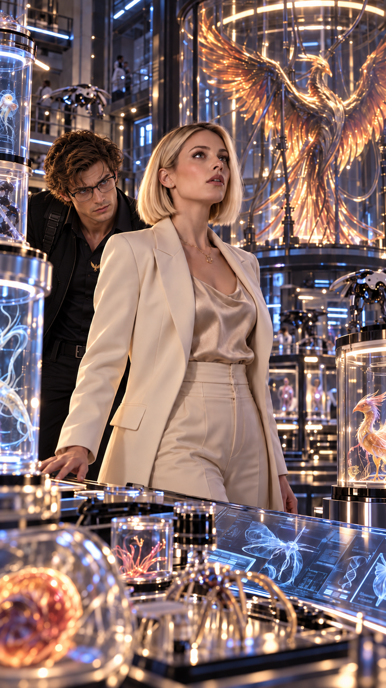
Peter conduit Betty dans une partie de l’hacienda qu’elle connaît peu.
Une porte dissimulée derrière une bibliothèque.
Un escalier.
Une porte biométrique.
Puis un laboratoire beaucoup plus grand qu’elle ne l’imaginait.
Du mouvement.
Betty tourne lentement sur elle-même.
— Peter…
— Oui ?
— Qu’est-ce que tu as fait ?
— Je préfère « créé ».
Betty lui lance un regard.
Peter désigne la pièce.
— Bienvenue dans ce qu’Hope appelle…
Il hésite.
— Mon zoo illégal.
Betty sourit malgré elle.
— J’aime de plus en plus Hope.
— Elle a aussi utilisé « nid à problèmes ».
— Là encore, elle marque un point.
Le Phénix traverse l’ouverture.
Peter lève le bras.
L’oiseau vient immédiatement s’y poser.
— Architecture biologique adaptable.
— Tissus renforcés.
— Capacité de récupération supérieure à celle d’un oiseau normal.
— Interface neuronale avec plusieurs systèmes de communication.
Betty l’interrompt.
— Et quelle part vient de moi ?
Peter hésite.
— Beaucoup.
Plus loin, les autres créations attendent.
Des organismes inspirés d’animaux réels.
Adaptés à des fonctions précises.
Traceurs.
Observation.
Exploration.
Cartographie.
Reconnaissance.
Apprentissage.
Betty comprend progressivement l’ampleur de ce que Peter a développé.
Et pourquoi cela lui fait peur.
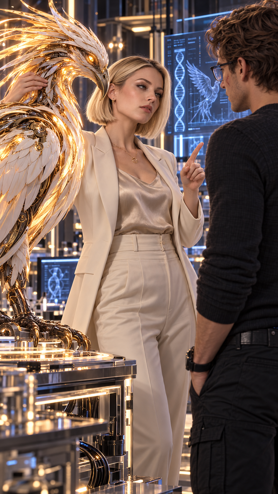
Betty observe de nouveau le laboratoire.
Puis son expression devient plus sérieuse.
— Peter.
— Oui ?
— Tu comprends pourquoi tout ça me fait peur ?
Peter sort immédiatement un petit dispositif.
— Déjà préparé.
Betty le regarde.
— Tu savais que j’allais accepter de t’aider ?
— Non.
— Je savais que si je te montrais tout ça, soit tu m’aiderais…
— soit tu détruirais le laboratoire.
Betty secoue la tête.
— Tu es insupportable.
— On me le dit souvent.
Le Phénix quitte soudain son perchoir.
Il vient se poser près de Betty.
Elle tend lentement une main.
L’animal approche sa tête.
Puis accepte le contact.
Betty caresse doucement ses plumes.
Peter l’observe.
— Il t’aime bien.
— Il ne me connaît pas.
— Peut-être qu’il reconnaît quelque chose.
Betty se fige légèrement.
— Quoi ?
Peter sourit.
— Son autre mère.
Betty tourne la tête.
— Ne recommence jamais avec cette phrase.
Betty tend la main.
— Donne-moi tous les protocoles.
Peter hésite.
— Maintenant ?
— Tous.
— Betty…
Elle lui adresse un sourire presque menaçant.
— Tu voulais libérer ta conscience.
— Félicitations. Maintenant, tu vas libérer tes dossiers.
Peter soupire.
— J’aurais dû me contenter de te courtiser.
Betty s’éloigne vers les écrans.
— Tu aurais eu plus de chances.
Peter la regarde.
— « Aurais eu » ?
Betty s’arrête.
Puis tourne légèrement la tête.
— Ne gâche pas tout.
Derrière eux, le Phénix déploie lentement ses ailes.
Et pour la première fois depuis que la vérité sur Anna a éclaté…
Betty sourit réellement.